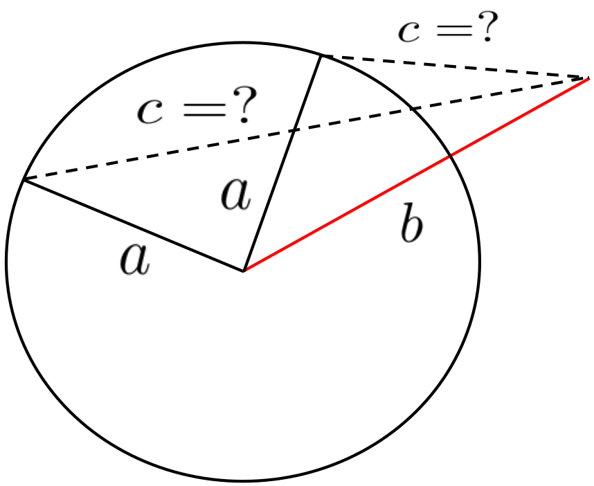
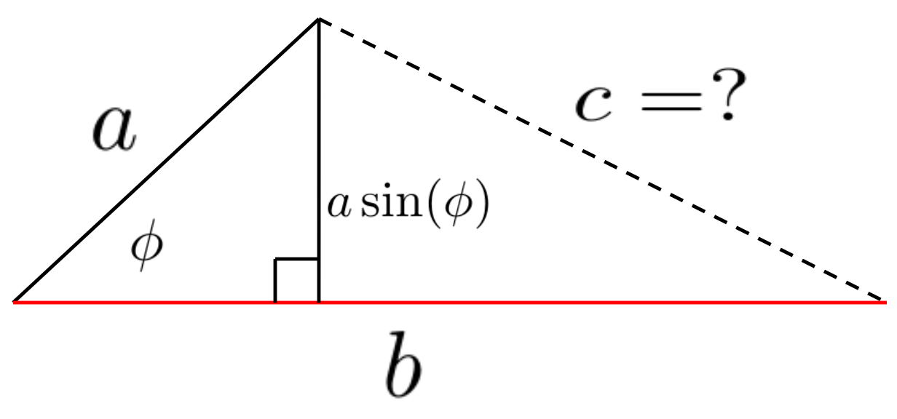
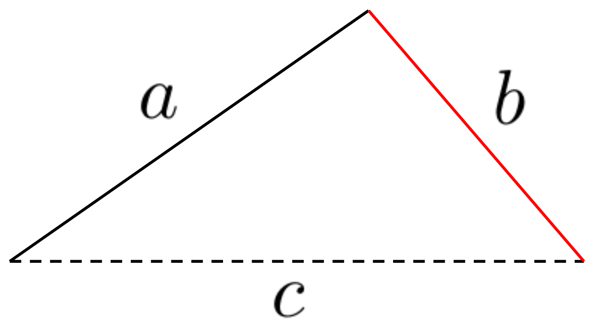

Our purpose here is to give you our very best advice on how to succeed in this course and a realistic impression of the level of difficulty of the course material. Please read this carefully and take our advice. We know what we are talking about. Believe us.
Because the topic we will be studying is called Calculus there is a strong tendency to assume that only the concepts and techniques of Calculus are needed to solve the problems you will encounter in this course. That is not true. You will need all of the mathematics you know. And probably more. Really.
Section2.1Using Letters Instead of Numbers
Before we begin, a few comments on notation are apropos.
Suppose your teacher starts a lecture with the statement, “Suppose \(a\) and \(b\) are two positive numbers. Then \(a \lt{} a+b\) and \(b \lt{} a+b\text{.}\)” A common complaint is that we’re making the problem harder. This is often accompanied with a request to replace \(a\) and \(b\) with numbers, just to make it easier to understand. For example, if \(a\) and \(b\) are numbers why not just say that \(a\) is \(23\) and \(b\) is \(17\text{?}\) In that case it is clear that \(23 \lt{} 40\ (=23+17)\) and \(17 \lt{} 40\text{.}\) Why do we have to make it more complicated?
Suppose your teacher starts a lecture with the statement, “Suppose \(a\) and \(b\) are two positive numbers. Then \(a \lt{} a+b\) and \(b \lt{} a+b\text{.}\)” A common complaint is that we’re making the problem harder. This is often accompanied with a request to replace \(a\) and \(b\) with numbers, just to make it easier to understand. For example, if \(a\) and \(b\) are numbers why not just say that \(a\) is \(23\) and \(b\) is \(17\text{?}\) In that case it is clear that \(23 \lt{} 40\ (=23+17)\) and \(17 \lt{} 40\text{.}\) Why do we have to make it more complicated?
This seems like a reasonable point until you think about it a bit more. Suppose we use the numbers \(a=\frac{\sqrt{11}-\pi}{4}\) and \(b=2.93\times 10^{1000}\) instead? Is it obvious to you that
Our point here is that the symbol \(a\) is no different than the symbol \(23\text{.}\) Or the symbol \(\frac{\sqrt{11}-\pi}{4}\text{.}\) These are all valid symbols representing numbers. So we treat them all the same. For example, all of the following are valid statements:
The difference is this: If \(a=23\) and \(b=17\) the first statement includes the second as a specific case. Similarly if \(a=\frac{(\sqrt{11}-\pi)}{4}\) and \(b=2.93\times 10^{1000}\) the first statement includes the third. The first statement is more general. It is true no matter what \(a\) and \(b\) are.
Drill2.1.
(a)
Use the fact that \(\sqrt{7}\lt{}\sqrt{9}\) to show that \(\frac{\sqrt{7}-\pi}{5}\lt{}0\text{.}\) Do not use a calculator.
(b)
Check the validity of the following statements. Are they true?
Find a restriction on the possible values of \(a\) and \(b\) that will guarantee that inequality (2.1)) is true.
Keeping things simple is laudable as a goal and we don’t want to suggest that you shouldn’t do it. It can be very useful to look at a special case of a general statement just to get a sense of the problem. For example, a good way to “trick yourself into abstraction” is to think \(23\) and \(17\text{,}\) but write down \(a\) and \(b\text{.}\) As long as you don’t try to do anything that relies on the particular properties of \(23\) and \(17\text{,}\) you should be fine. But you wouldn’t want to say something like \(a+b\) is an even integer (even though \(23+17\) is). The sum \(23+17\) is an even integer because both \(23\) and \(17\) are odd integers, but this is special to these numbers and won’t be true for \(a\) and \(b\) in general.
Problem2.2.
(a)
Suppose \(a\) and \(b\) are both integers. Find restrictions on the possible values of \(a\) and \(b\) that will guarantee that \(a+b\) is an even, positive integer.
(b)
Now suppose \(a\) and \(b\) are both numbers. Find restrictions on the possible values of \(a\) and \(b\) that will guarantee that \(a+b\) is an even, positive integer. (This is not the same problem as part (a). Read it carefully.)
When looking at \(23\times17\) most people are inclined to compute this to get \(391\text{.}\) If the problem is: Find the value of \(23\times17\text{,}\) then sure, doing the arithmetic is the correct thing to do. But the last time you were asked to do multiplication for its own sake you were probably \(11\) years old. Elementary computations like this will only come up in the context of a more advanced problem. Before doing this calculation, you should ask yourself if it will help you solve the more advanced problem.
Now suppose the problem is: Determine if the number \(23\times17\) is divisible by \(17\text{.}\) Do you see that computing \(23\times17=391\) will only make the problem harder?
Your college professors will never ask you to do an arithmetic calculation for its own sake. Instead arithmetic problems will come up in the context of a more advanced problem and you will need to use your arithmetic skill to uncover patterns. But doing the arithmetic, boiling everything down to a single number usually hides the patterns!
For example, is it easier to see the pattern in the following list of numbers when they are presented like this:
Actually, there is something rather liberating about using letters to represent a broad class of numbers. Consider the following questions:
(a)
Is the number \(2^{24}5^{49}11^{1002}\) a perfect square? If so, what is its square root?
(b)
What about \(2^{24}5^{50}11^{1002}\text{?}\) Was your calculator of any use on this? Notice that these numbers were completely factored into their prime factorizations. Did that help? How?
(c)
Now suppose that \(n\) is a positive integer. Is \(2^{2n}5^{3n}11^{4n}\) always a perfect square? If not, for which values of \(n\) will it be a perfect square?
(d)
What can you say, in general, about whether or not an integer greater than one is a perfect square in terms of its prime factorization?
Section2.2Substitution, or Making Things “Easy on the Eyes”
Mathematicians do not study objects, but relations between objects. Thus, they are free to replace some objects by others so long as the relations remain unchanged.
It is a common misconception is mathematicians love complicated formulas. In fact, the opposite is true. We really very much prefer to keep things as simple as possible. We only accept complexity when we are forced to. Moreover, with experience we have learned that complexity is usually borne of an inadequate understanding of the problem. Better understanding usually results in a simpler formulation.
This works in reverse too. If we can find a simple way to express what appears to be a complex problem we can usually gain a deeper understanding of the problem and its solution. A judicious substitution is one way to re-express a complex problem.
Example2.4.A Horrible Formula.
For example, suppose you were asked to solve the following equation for \(x\text{:}\)
At first glance this looks horribly complicated. But look at it again. On the right the coefficient of \(x\) is \(\pi^3-\sqrt{2}.\) That’s just a number. It is approximately \(29.6\) but who cares? For purposes of algebraically isolating \(x\) all we need to know is that it is a number. Rather than calling it \(\pi^3-\sqrt{2}\text{,}\) let’s just call it something simple, like \(A\text{.}\) Think of it as giving the expression \(\pi^3-\sqrt{2}\) a nickname; something shorter, and easier to remember.
But wait. The expression \(\sqrt[21]{2^{\frac{11}{2}}}\) is also just a number. Let’s make it “easier on the eyes,” too. If we let \(B=\sqrt[21]{2^{\frac{11}{2}}}\) we have
which is even easier to look at. By now you see where this is going. If we let \(C=\frac{\frac{\pi}{\sqrt{(28-\sqrt[3]{26})^{\frac{1}{3}}}}}{\pi^2-\sqrt{3}}\) then our equation is \(Cx-B=Ax\) which is much “easier on the eyes” than the original equation was. In fact, we can now see that this is really a very simple equation and the solution is \(x=\frac{B}{C-A}\text{.}\) Of course we inserted \(A\text{,}\)\(B\text{,}\) and \(C\) into the problem so now we need to unwind our substitutions. When we do that we get
If a decimal number is required we could enter this formula into whatever computational tool we’re using. Good luck with that.
The previous example was clearly contrived. Obviously we went out of our way to make a simple problem look complicated just so we could simplify it. As a result it would be easy to dismiss this as a silly example. But it is not. There is a serious lesson to be learned here. One that we will use over and over again in the near future. By its very nature mathematical notation is not easy to read. It is so dense, with so much information packed into a few symbols, that it is easy to misinterpret. Making a formula easier to read can be very helpful. A well chosen substitution can make a complex looking formula much easier to work with.
Example2.5.
When you were learning Algebra you almost certainly encountered problems like this: Given
At first glance, this looks like a formidable problem. However, if we look closer we see that it actually has a very familiar form. Because \(x^{\frac{2}{3}}=\left(x^{\frac{1}{3}}\right)^2\) we can rewrite Equation (2.2) as
and if you look closely you’ll see that Equation~ (2.3)) is “quadratic in form.” That is, it is really a quadratic equation — which we know how to solve — in disguise. However it is still rather difficult to see the quadratic nature of Equation (2.3). To make this very clear we let
That is, just as in Example 2.4 we give the expression \(x^{\frac{1}{3}}\) the nickname, \(z\text{,}\) which is shorter, easier to remember, and “easier on the eyes.” Then Equation (2.3) becomes the quadratic equation:
\begin{equation*}
z^2-4z+3=0.
\end{equation*}
Our problem is not solved. Indeed, we haven’t even tried to solve it yet. But it is much more simply expressed. And because it is more simply expressed we can now see how to solve it. Factoring, we have
so we have \(z=1\) and \(z=3\text{.}\) But, of course, these are not solutions of our problem. We have found \(z\) (which we inserted into the problem) not \(x\) (which is what we need to find). To complete the solution we need to unwind the substitution we made and solve the two equations
\begin{equation*}
x^{\frac{1}{3}}=1 \text{ and }
x^{\frac{1}{3}}=3,
\end{equation*}
yielding the solutions \(x=1\) and \(x=27\text{,}\) respectively.
In making a substitution our goal is always to make the formulas we are dealing with simpler to understand and easier to read. In Examples 2.4and 2.5 it was straightforward to see how to do that. There were expressions that were hard to read so we simply replaced a complicated part of the problem with something simple. It isn’t always that easy. Sometimes just finding a good substitution presents challenges of its own.
For example, the Quadratic Formula can be derived by making a very simple substitution that allows us to solve the general quadratic equation
Once the substitution is found it is very easy to work through the algebra, but finding the right substitution in the first place is not straightforward at all.
Drill2.6.
Before reading any further see if you can come up with the right substitution for Equation (2.4)).
Hint.
The goal is to eliminate the linear term, \(bx\text{.}\) You can see how this would help. If \(bx\) were not present in Equation (2.4) we could easily solve \(ax^2+c=0.\)
Were you able to solve Problem 2.6? It’s actually very hard to do without some guidance. Here’s another hint. Try the substitution \(x=y-\frac{b}{ka}\) where \(k\) is a parameter to be determined. That is, make this substitution and find the value of \(k\) that eliminates the linear term.
After making this substitution the problem will be given in terms of \(y\text{,}\) not \(x\text{.}\) That’s OK. Solve the problem in this form, and then unwind your substitution back to the original \(x\) variable.
which is more complicated, not less. Of course it is. Sometimes you have to complicate before you can simplify. Don’t give up. Multiply everything out to see what you’ve got.
Once you’ve found \(k\) make the substitution and eliminate the linear term — that was the objective, remember? At that point you should see the Quadratic Formula starting to emerge. Don’t forget to unwind the substitution and solve for \(x\text{.}\)
Section2.3An “Easy” Problem From Geometry
Ideas are like rabbits. You get a couple and learn how to handle them, and pretty soon you have a dozen.
We’ve chosen the following example because it is neither particularly easy nor particularly difficult. It is typical of the kinds of medium level problems that appear in most Calculus textbooks.
Example2.8.
The lengths of two sides of a triangle are \(a\) and \(b\text{.}\) If the third side is chosen in such a way that the area of the triangle is as large as possible what is the length of the third side?
You may be able to intuit the correct answer to this problem. That’s OK, but you should try to solve it, too. By “solve” we mean that you should be able to explain to someone with the same mathematical skills you have at the moment why your answer is correct.
Before reading further do your best to solve this problem in Example 2.8. We’ll wait.
At first it is difficult to see where to begin. (That’s why it’s called a problem.) Don’t let this stop you! In our experience the most common mistake is giving up too soon.
Don’t. Do. That. Keep thinking.
Solution.Partial Solution
Since we know the lengths of the sides \(a\) and \(b\) of our triangle let’s draw it. The sketch at the right would be typical. The question is, what length for side \(c\) makes the total area enclosed by the triangle as large as it can possibly be?
Now what?
Well, this looks like a right triangle doesn’t it? If it is a right triangle, then we can find the length of \(c\) via the Pythagorean Theorem: \(c=\sqrt{a^2+b^2},\) right?
Before you go on take a moment and really think about this problem. Can it really be that simple? Can you find any flaws in our reasoning.
Once you think about it you see that we have no reason to believe that the triangle we seek must be a right triangle. It was completely accidental that we drew our diagram that way. If this seems like a simple-minded mistake, the sort of mistake that you would never make, be careful. It is a mistake to rely too heavily on the diagrams we draw. But it is an easy mistake to make, especially when the problems are more complicated, because as problems get complex we will need to rely on visualization more and more. This was not a dumb mistake. It was just a bit careless, and it is easy to be careless, especially when we first start thinking about a problem.
Digression2.9.Making Mistakes.
Being wrong isn’t a bad thing like they teach you in school. It is an opportunity to learn something.
By definition, mistakes are wrong. A mistake is always obvious after you recognize it as a mistake. Everyone makes mistakes in the course of solving a problem. The process of making mistakes, recognizing them as mistakes, and figuring out why they are mistakes is called learning. The very smartest people, for example Isaac Newton 7 , Gottfried Leibniz 8 , Galileo 9 , Pierre Fermat 10 , Marie Curie 11 , Emmy Nöther 12 , Albert Einstein 13 , or Richard Feynman 14 , made lots of mistakes. Making mistakes is how they got to be smart.
Isaac Newton was once asked how he had been able to solve problems that no one before him had solved. His reply: “By thinking, and thinking, and thinking about them.” Of course, when he described his solutions he left out all of the errors like anyone would do, because, who cares about those? Making mistakes doesn’t typically get the attention it deserves. An expert is someone who has made every possible mistake. This is why your teacher, an expert, will seldom err.
Each mistake you make reflects the level of your current understanding of the problem. Each mistake you make takes you a little closer to expertise. Embrace your mistakes and make lots of them! They are proof that you are making progress. But make no mistake (Gasp!) about it, making and embracing a mistake is just the first step. You also have to figure out what went wrong.
Sadly, mistakes are too often seen as a source of embarrassment. Too many students will berate themselves as stupid every time they make a mistake. Don’t do that. It is pointless and counter-productive. All it will do is destroy your self confidence. Don’t do it. Learning Calculus can be hard, but you would not have made it this far if you couldn’t do it. So keep making mistakes. Ask for help when you need it. And don’t give up. You have not failed until you stop trying.
Let’s look at this problem again. The triangle we seek might look like the first one we drew, or it might look like either of the ones drawn in the diagram below, or myriad others. We simply don’t have enough information to decide at this point.

But from the diagrams we’ve drawn so far we can see that one end of side \(a\) must be pinned to one end of side \(b\) and for each angle between \(a\) and \(b\) we have a different possible triangle. We don’t have to think of both of them as in motion. We can think of one of them, say \(b\text{,}\) as fixed while the other swings around their common endpoint. The circle in our diagram indicates all of the possible positions \(a\text{.}\)
Do you see how that worked? Our first attempt was simple-minded, but by drawing our first, simple-minded sketch, making a stab at a solution, and figuring out why our simple-minded approach won’t work, we were led to this insight: We can think of \(b\) as static, and we can think of \(a\) as swinging freely while pinned to the end of \(b.\)

Clearly we need to find the angle between \(a\) and \(b\) —- call it \(\phi\) as in the sketch at the right —- that maximizes the area of the triangle. But which angle does that?
Whenever triangles are involved it is a good idea to recall your Trigonometry. After all, that’s what Trigonometry is about, isn’t it? Since we are thinking of \(b\) as fixed, we may as well use it as the base. This makes the height equal to \(a\sin(\phi).\) Also, since we’re trying to maximize the area we should probably write down the area formula: \(A=\frac12\text{(b)ase}\times\text{(h)eight}.\) Thus the area of the triangle is \(A=\frac{1}{2}ab\sin(\phi).\)
Is it clear that our initial guess was correct? The angle, \(\phi,\) that maximizes the area will be the one whose sine is as large as possible. That would be \(\phi=90^\circ\) so \(c=\sqrt{a^2+b^2}\) provides the maximum area.
You might be a little uncomfortable with our argument that \(a\sin(\phi)\) is maximized when \(\phi=90^\circ\text{.}\) If so, then for you, this problem is not finished. Possibly we’ve made a mistake. Let’s follow our own advice and see why it is a mistake, if it is.
Drill2.10.
Replace \(a\sin(\phi)\) with \(h\) in the diagram above. Use the Pythagorean Theorem to reason that if \(\phi\lt{}90^\circ\) then \(h\lt{}a\text{.}\) How does this apply to the problem of maximizing the area of the triangle?
Until we can demonstrate that \(c=\sqrt{a^2+b^2}\) with a convincing and rigorous argument, this problem is not solved. Instead it is only a conjecture; an educated guess. Our evidence so far is very convincing so it is a very well educated guess, but it is still only a guess.
Section2.4Our advice, a synopsis
There are times when I feel like I’m in a big forest and don’t know where I’m going. But then somehow I come to the top of a hill and can see everything more clearly. When that happens it’s really exciting.
If you see a whole thing — it seems that it’s always beautiful. Planets, lives . . . But up close a world’s all dirt and rocks. And day to day, life’s a hard job, you get tired, you lose the pattern.
In order to solve a problem, any problem, you must:
Have an idea
Solving a mathematical problem is a bit like getting dropped in the woods without a map or any GPS technology and being told to find your way out. First you have to find a path. Once a path is found, you have to follow it. Nothing else really has a chance of working. Following your path will eventually lead you to another path. Now you have to decide which path to follow, so you look around and make your best guess. If you guess right, great! If not you will have to backtrack and take the other path. And so it goes. Guess. Backtrack. Guess again. As you learn the terrain and get familiar with the network of paths your guesses get better. Sometimes none of the paths you’ve found seem to be getting you closer to your destination. So you have to try something different, like getting off of the path completely.
Eventually you’ll get where you’re going but the one thing you can’t do is give up. You will never get anywhere if you don’t keep trying.
Having an idea is like following a path in the woods. It’s a start, but that’s all it is. You still have to follow it. After you’ve taken it as far as you can you need to look for another idea; a new path to follow.
Finding your way out of the woods takes patience, diligence, and a lot of hard work. So does solving a mathematics problem. Except, of course, that you won’t die of exposure if you don’t solve the math problem.
If an idea occurs to you, follow it. Most likely you will not hit on a good, or even a workable approach the first time. Or the first three times. That’s OK. Keep thinking about the problem anyway. It is frustrating and it doesn’t feel like progress, but it is. As long as you are having and discarding ideas you are making progress.
Really, have an idea. If you don’t have a good idea, then use a bad one.
OK, we hear you say, but what if I don’t have any good ideas? What do I do then?
Easy. Use a not-so-good idea.
This is what you’ve been doing all of your life anyway isn’t it? You just didn’t tell anyone because you were sure you were doing something wrong, right? You weren’t.
The most important thing you can do is get started. That’s what having an idea is for, getting started. All we did to start the problem in Example 2.8 was draw the lines \(a\) and \(b.\) Look back up at our partial solution and see. The first thing we did was make the drawing below:

Can you think of anything more simple-minded? And yet it worked. It didn’t work right away, but it got us moving in the right direction.
Have another idea.
Because this is a textbook we couldn’t really waste time and pages by running down blind alleys, so we started off with an idea that we knew would take us in the right direction. In real life this usually won’t happen. Most often your first (two or three or four) ideas aren’t going to take you in the right direction. That’s OK. Figure out what is wrong with them. You had some intuition about the problem that led you to your idea. Figuring out why it didn’t work will clarify things for you just a bit. That will help.
So, have another idea that is based on what you learned from your first idea. And another. And another after that. Keep having ideas until you find one that works. Another way to say this is: Don’t give up.
Ask for help when you get stuck, not before.
Sometimes ideas just won’t come to you. That’s OK. Sometimes you will need help. Ask for it. Ask your teacher, another student, a tutor, your Mom, your Dad, a former teacher. Ask. For. Help.
But ask constructively. If you are asking another student, a peer, it is fine to ask, “How do I do this problem?” But if you are asking your teacher, or a tutor, this sounds a lot like, “This problem looks hard, my friends are meeting up in half an hour and, besides, I don’t really want to spend any more time on it. Please, do this problem and let me watch so I can turn it in and go have fun with my friends.” This is not usually effective. Moreover some teachers will get a little testy about it. Instead ask something like, “I’ve tried this, and this, and this, but I keep getting stuck here. Can you give me some direction?” That shows that you have already put real effort into solving the problem and are willing to continue working on it.
To be clear, your teacher knows that a serious student does not mean this, that you really just want to learn how to do the problem. The difficulty is that there are always some students who have no qualms about asking their instructor to do problem after problem with no intention of learning anything. They just want to copy the answers down and quit. Teachers quickly learn to identify these students from the way they ask questions. If you approach your instructor in the same fashion that a non-serious student does the response you get won’t be as helpful as you would like. Teachers want to help serious students, but non-serious students are a waste of time. Be a serious student. Just as importantly, act like a serious student.
Or, if you find the problem so mystifying that you can’t even think of a first idea ask, “I really don’t know where to begin on this problem. Can you point me in the right direction to get me started?”
Keep thinking about the problem after you solve it.
After you’ve solved a problem, pause for a moment, take a sip of coffee, or tea, or whatever and think about the problem you just solved. This is like the difference between looking at a mountain from its base, when all you can see is the tangle of brush in your way, and looking at it from the peak. From the peak all of the obstacles you overcame getting there look small and unimportant. You can see the broad outlines of the mountain and the path you took climbing it. Frequently you will also see a better path than the one you took.
This kind of reflection is the most neglected aspect of problem solving. After you’ve been struggling with a problem you probably don’t ever want to see it again. This is a natural response. However, before you put the problem away reflect on your solution and make this part of your knowledge base. Think about which ideas you had that worked, and which ideas you had that didn’t work. Think about why they did, or didn’t work. Do this immediately, while the problem is still in your mind. Later, if something reminds you of this problem, think about it some more to see why you were reminded of it.
The difference between the teacher and the student is not intelligence, but experience. The more problems you solve, the more experience you gain. But you need to be able to use that experience for subsequent problems. Reflecting on a problem after you solve it is how you make the knowledge you gained from the problem available for later use.
For example, see if you can use what you learned from the triangle problem to solve Drill 2.11.
Use your intuition, but don’t trust it.
Finally, because many problems in Calculus are about motion and you are very familiar with how things move, you will often have a good deal of intuition into their solution. Paradoxically you need to learn to use, but not to trust, your intuition.
When approaching a problem intuitively, there is a tendency to add assumptions to familiar looking problems. Notice how easy it was to believe that our triangle must be a right triangle just because our first drawing looked like a right triangle.
As we said, you will have some intuition into many problems, and intuition can be very helpful, but it can also lead you astray. You need to learn to support your intuition with reasoning.
Drill2.11.
Out of all parallelograms with sides \(a\) and \(b\text{,}\) which would have the largest area?
Drill2.12.Some possibly deceptive problems.
All of the problems below refer to the following diagram:
You will probably have a strong insight, or intuition, about each of the following claims. Do your best to explain why each is true, or why it is false. Read each problem carefully and take care not to add assumptions that are not in the problem. Back up your claim with reasoning, not intuition.
(a)
Given a regular polygon inscribed in a fixed circle, if you double the number of sides, then the area inside the polygon becomes larger.
(b)
Given a polygon inscribed in a fixed circle, the more sides there are, the bigger the area inside the polygon is.
(c)
Given a polygon inscribed in a fixed circle, the more sides there are, the bigger the perimeter is.
(d)
Given the following parabola with axis \(\overline{AM}\text{,}\)\(M\) is the midpoint of \(\overline{BC}\text{.}\)
(e)
In part (d), what if we insist that \(\overline{BC}\) is perpendicular to \(\overline{AM}\text{?}\)